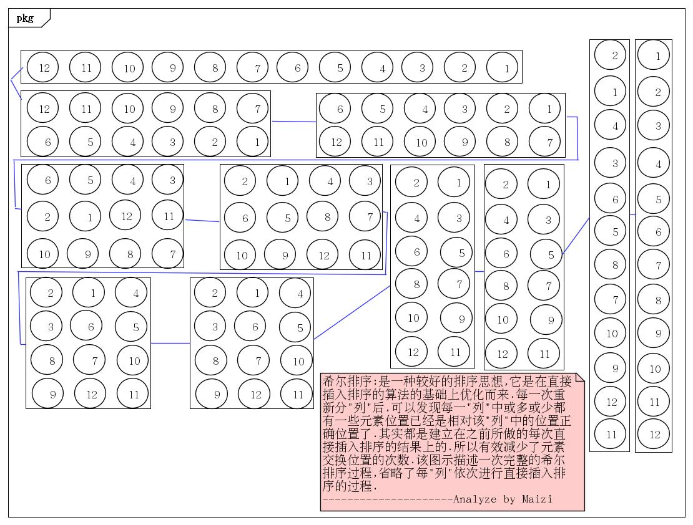
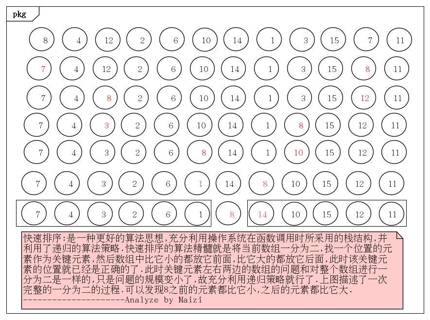
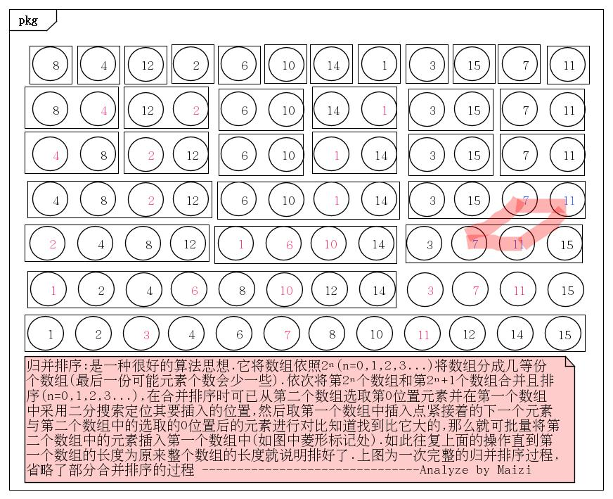

排序算法合集之希尔
希尔排序算法描述:
算法分析:
假若排成升序,用顺序表的数据结构来解决该问题,希尔排序是对直接插入排序的改进算法,该算法的时间复杂度O(n)=nlog₂n(最好时复杂度)
①先找到一种算法对整个数组进行’分列’,该博文中使用的是用数组长度加一依次除以 2 3 4…得到的结果最为每’列’中元素相邻位置在原一维数组中的 增量
②将 ① 中的每一列依次进行直接插入排序,直至最后 增量 为1时再对整个数组进行一次直接插入排序

希尔排序算法优劣:
优势 : 算法的空间复杂度较小
劣势 : 算法略复杂,且时间复杂度还是不小,但相对于n²还是小了不少.
劣势 : 算法略复杂,且时间复杂度还是不小,但相对于n²还是小了不少.
贴上代码:
|
|
附上测试结果:
|
|
排序算法合集之快速
快速排序算法描述:
算法分析:
假若排成升序,用顺序表的数据结构来解决该问题,该算法的时间复杂度O(n)=nlog₂n.
①先定义两个整型变量low和high用于记录当前的最低和最高位置,依次初始化为0和数组的长度减一(len-1)
②从数组的最高位开始,依次向前寻找第一个比最低位元素小的元素且每向前一次high–,还要保证low
③递归调用 ② 过程直至数组不可再分为止就说明排完了

快速排序算法优劣:
优势 : 算法的时间复杂度较小,效率很高
劣势 : 该算法过度使用操作系统函数调用时的栈空间,导致空间复杂度较大,在jvm这种平台上还可能导致栈溢出.
劣势 : 该算法过度使用操作系统函数调用时的栈空间,导致空间复杂度较大,在jvm这种平台上还可能导致栈溢出.
贴上代码:
|
|
附上测试结果:
|
|
排序算法合集之归并
归并排序算法描述:
算法分析:
假若排成升序,用顺序表的数据结构来解决这些问题,该算法的时间复杂度O(n)=nlog₂n.
①将数组按2º(0,1,2…)为步进均分成成多个”数组”,然后从数组的头部将相邻的数组合并且将合并后的数组进行排序.
②重复 ① 中的过程直至步进大于或等于数组长度的一半且小于数组长度时,就说明是最后一次合并了

归并排序算法优劣:
优势 : 算法原理较希尔和快速更易懂,由于合并的相邻的两个”数组”内部的元素各自都是有序的,在合并时就可以批量移动,且还可以利用二分搜索进行定位相关的操作.
劣势 : 该算法过度使用操作系统函数调用时的栈空间,导致空间复杂度较大,在jvm这种平台上还可能导致栈溢出.
劣势 : 该算法过度使用操作系统函数调用时的栈空间,导致空间复杂度较大,在jvm这种平台上还可能导致栈溢出.
贴上代码:
|
|
附上测试结果:
|
|
2016-09-15
— Maizi